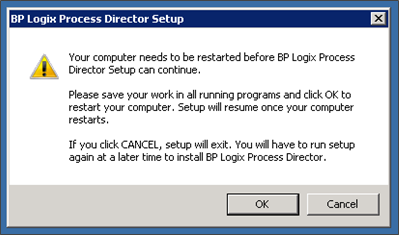

Installation Warning
Occasionally, the installation process will display a dialog box with an error message, informing you that a restart will be required to continue the installation.

This warning is presented when the installation process detects a file in use that needs to access in order to install properly. If you click the "Cancel" button and re-run the installation, there is a slight chance that Process Director files will be removed when the server eventually reboots (e.g. resource.resx). This behavior results from a command that stays active after the Cancel command is given, and which instructs the installation to clean up files. To recover from this error, simply re-run the install program and it will patch up the installation.
To avoid the possibility of this error, Click the OK button, rather than canceling the running installation process.